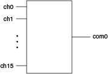

The following figure represents the NI PXIe-2748 in the 16×1 multiplexer topology.
Call the niSwitch Connect Channels VI or the niSwitch_Connect function to connect channels in this topology. If applicable, you must call the niSwitch Disconnect Channels VI or the niSwitch_Disconnect function to disconnect an existing connection before you call the niSwitch Connect Channels VI or the niSwitch_Connect function.
|
Note The niSwitch Disconnect Channels VI or the niSwitch_Disconnect function does not operate the relay until the next niSwitch Connect Channels VI or the next niSwitch_Connect function is executed. Thus, one channel of the 16×1 multiplexer is always connected to the common channel. If you have reset the module or called the niSwitch Disconnect All Channels VI or the niSwitch_DisconnectAll function, you do not need to disconnect the default channel (ch0) from COM upon initial connection. |
The following sequence of tasks illustrates the VI/function calls necessary to make consecutive connections—one between CH1 and COM and the other between CH2 and COM: